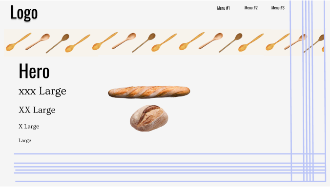
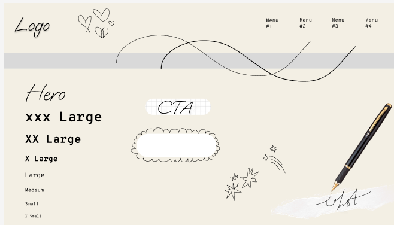
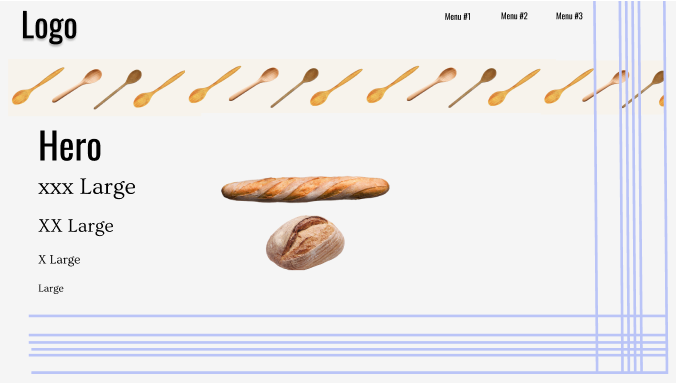
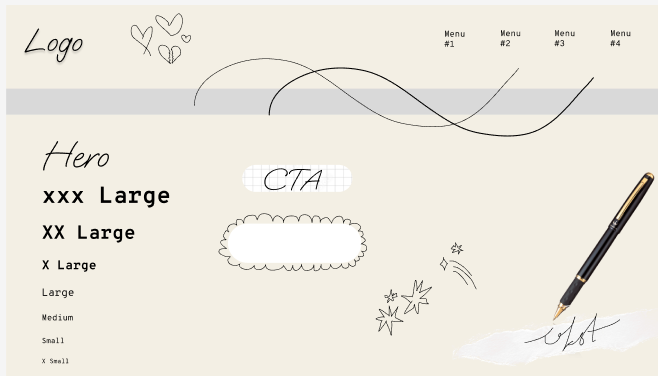
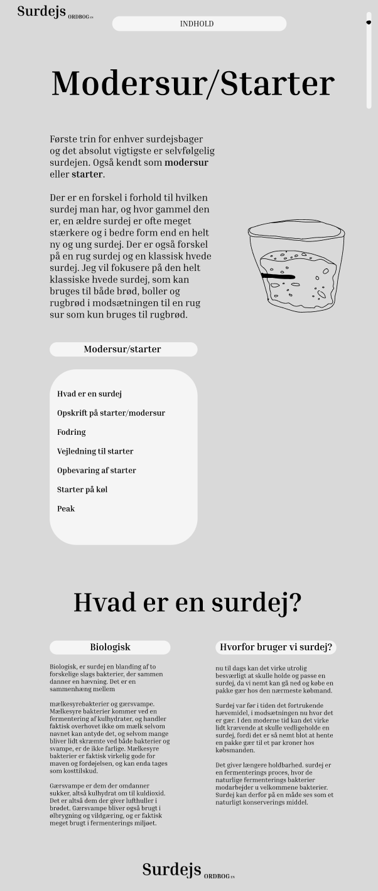
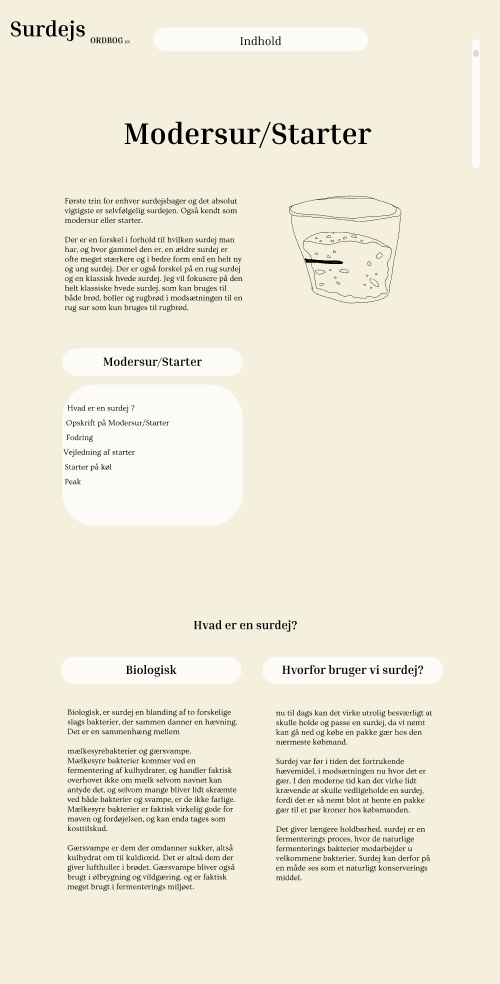
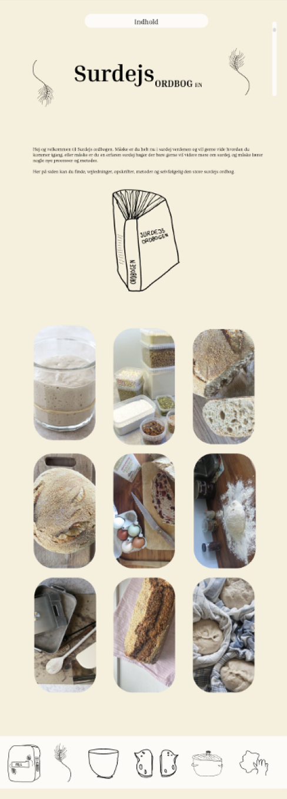
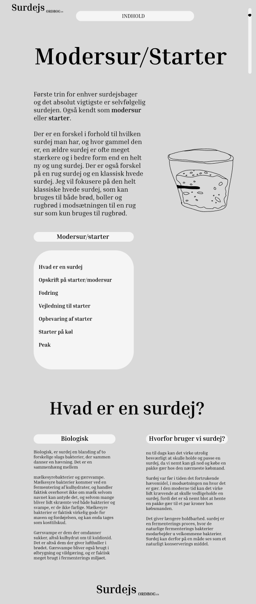
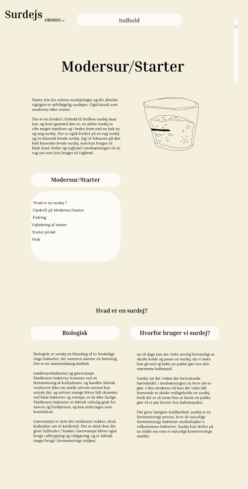
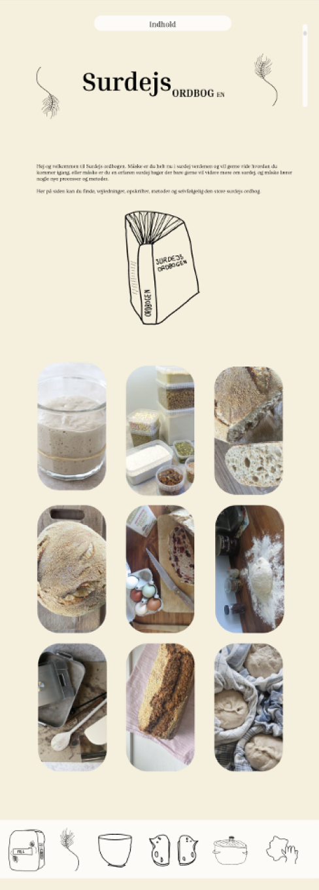

design proces
målgruppe
style tiles
farver og æstetik
I den første del at processen arbejdede vi meget med målgrupper og bruger typer, og allerede her vidste jeg at der er mange forskellige surdejsbagere. Jeg ville gerne have en side der kunne appellere og tale til i teorien alle surdejs bagere. Derfor har jeg arbejdet med at man skulle kunne navigere mellem forskellige sider med f.eks. lidt tekst, som ordbogs siden, eller mere tekst som modsurs siden. Dermed ville alle brugere kunne navigere efter behov. Jeg ville gerne have at den nye surdejsbager kunne blive taget i hånden men også at en mere erfaren bager ville kunne finde nye fagord eller mere komplekse tekniker.
Jeg lavede to forskellige style tiles, men brugte faktisk ikke nogle af dem. Jeg lavede en med udgangspunkt i noget blog liggende og med fokus på et indtryk af håndskrævet opskrifter. Dog syntes jeg ikke at det var alsidigt nok, og det style tile jeg lavede, talte ikke så meget ind i surdej og bagning som jeg gerne ville have det. Det andet style tile jeg lavede havde fokus på brød, bagning og køkken. Blå viskestykke striber, og banner funktionen med skeer. Jeg stynes dog ikke at der var brugervenligt nok, og jeg syntes at en ordbog skal ligge stort fokus på det bruger venlige. Jeg tog nogle ting med fra de to style tiles. Jeg tog banner funktionen med fra den med brød og køkken, og tegninger fra den blog inspirerede.
i mit arbejde med farver og æstetik ville jeg gerne opnå noget der talte ind i selve surdejsuniverset. Jeg valgte en farve som faktisk var taget fra et brød jeg selv havde bagt, for at få den helt rigtige farve at ristet og bagt mel, der netop har en svag gullig, brun, varm farve. Derudover ville jeg gerne have en gammeldags håndskrevet kogebogs æstetik, for at tale ind i det gammeldags håndværk som surdejs er. Derfor tegnede jeg også nogle illustrationer som jeg mener talte ind i det univers, samt fordi jeg i min barndom altid tegnede og skræv opskrifter ned, og lavede små kogebøger. Så dermed var det også for at have et lidt personligt tutch med.
 



wireframes
 





ændringer og optimeringer
heruistisk test
fremtidige ændringer
Den første grå wireframe, var blot en design prototype uden nogen stor stilmæssig tanke, eller æstetik. Den primære ændring jeg tog med fra den wireframe, var at der ikke var nok fokus på selve ordbogen. Den næste wireframe er min prototype i figma. Der opdagede jeg at linjerne var lidt for lange, og så dermed klodset ud. Det gjorde det også svært at læse for brugeren. Ordbogen var heller ikke fangende nok og skabte ikke nok opmærksomhed. Derudvoer var det grid der er med indholdet over siden er ikke brugervenligt nok, derfor ændre jeg det til at være maskotterne og overskrift til siden. Designet jeg havde på min wireframe var altså mere egnet til en mpbil mere end et descop wiev.
For at få et bedere kendskab til min side fra brugerens øjne lavede jeg en heuristiske test. Efter min heuristiske test ændrede jeg nogle ting på mit site. Jeg ændrede den tegnede ordbog til en roterende gif jeg selv lavede, for at skabe mere fokus og et støre blikfang på ordbogen. Og jeg ændred, nogle grid elementer og prøvede at gøre siden mere bruger venlig.
Efter arbejdet med min emnesite, er der selvfølgelig mange ting som jeg gerne ville havet ændret, hvis jeg havde mere tid eller de rette kompetencer til at udføre netop de ting. Jeg havde ambitioner om et roterende banner med illustrationer, nogle hovereftekter på forsiden, klickbare ord, og swipe bar funktion til min mobil site. Når jeg er kommet mere på afstand fra temaet, ville jeg også havet lavet nogle stilmæssige og æstetiske ændringer.